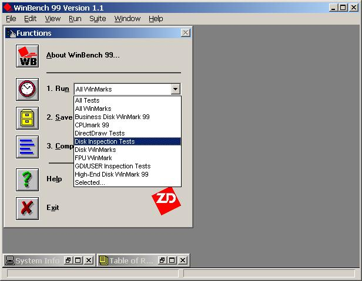
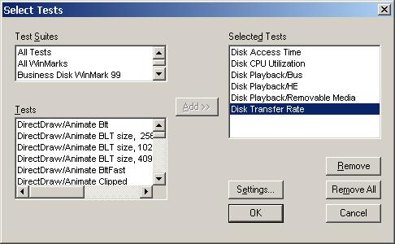
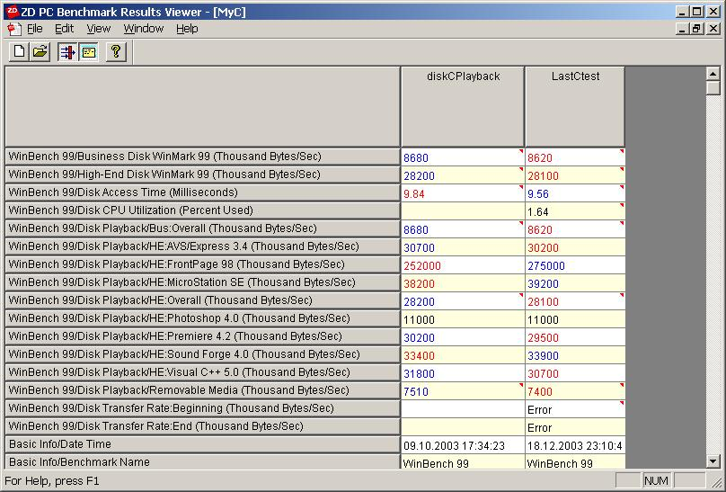
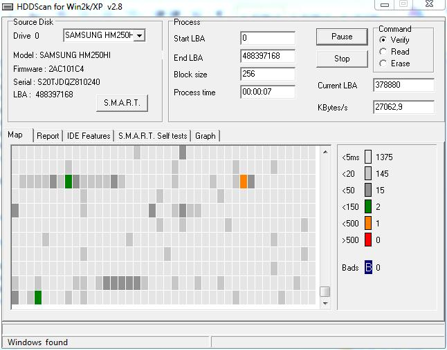
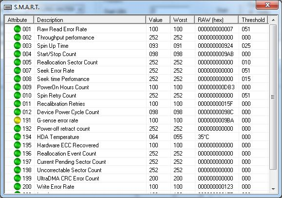
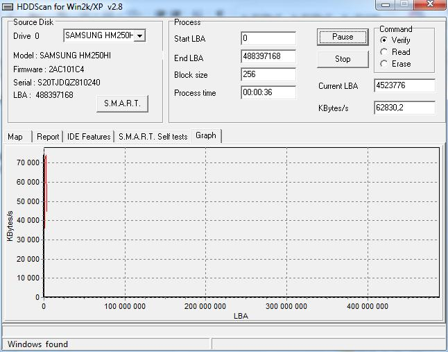
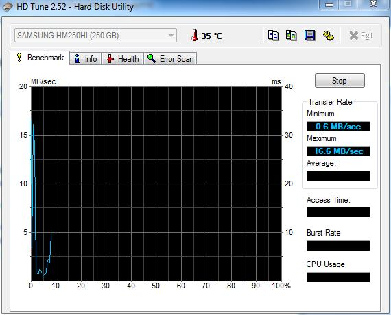
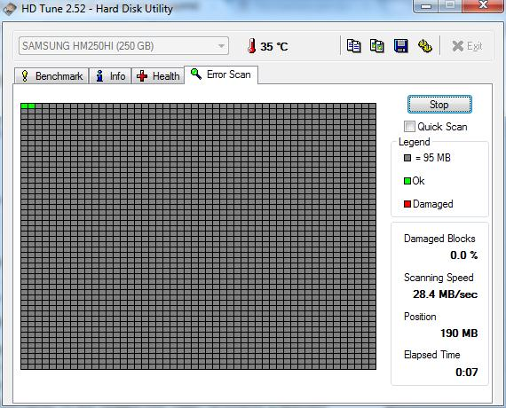

9. Тестирование
9.1 SMART
S.M.A.R.T. (от англ. self-monitoring, analysis and reporting technology — технология самоконтроля, анализа и отчётности) —технология оценки состояния жёсткого диска встроенной аппаратурой самодиагностики, а также механизм предсказания времени выхода его из строя.
SMART производит наблюдение за основными характеристиками накопителя, каждая из которых получает оценку. Характеристики можно разбить на две группы:
- параметры, отражающие процесс естественного старения жёсткого диска (число оборотов шпинделя, число перемещений головок, количество циклов включения-выключения);
- текущие параметры накопителя (высота головок над поверхностью диска, число переназначенных секторов, время поиска дорожки и количество ошибок поиска).
Данные хранятся в шестнадцатеричном виде, называемом «raw value», а потом пересчитываются в «value» — значение, символизирующее надёжность относительно некоторого эталонного значения. Обычно «value» располагается в диапазоне от 0 до 100 (некоторые атрибуты имеют значения от 0 до 200 и от 0 до 253).
Высокая оценка говорит об отсутствии изменений данного параметра или медленном его ухудшении. Низкая говорит о возможном скором сбое.
Значение, меньшее, чем минимальное, при котором производителем гарантируется безотказная работа накопителя, означает выход узла из строя.
9.2 ZD WinBench 99
ZD WinBench 99 является комплексным тестом компьютерного оборудования. Он позволяет тестировать процессор, память, видео, дисковые подсистемы и др.
Для тестирования дисковой подсистемы используются наборы тестов Disk Inspection Tests и Disk WinMarks из этого комплекта Ziff-Davis WinBench 99 ver 1.1. Данные тесты работают с логическими дисками. Они эмулирует работу с реальными приложениями, а также содержат синтетический тест, позволяющий определять скорость линейного чтения и зависимость этой скорости от физического месторасположения блока данных на диске.
Набор Disk Inspection Tests представляет собой совокупность тестов, определяющих физические характеристики диска. Сюда входят:
- Disk Transfer Rate. Тест определяет скорость линейного чтения для данного диска в тысячах байт в секунду (thousand bytes/sec). Выдаются два числовых значения – скорость в начале и конце диска, а также, по желанию, график в формате bmp или таблицу значений в формате csv (comma separated values).
- Disk Access Time. Определяет скорость доступа к диску в миллисекундах (ms). Получается значение, равное сумме времени задержки (average latency) и среднего времени поиска (average seek time).
- Disk CPU Utilization. Показывает загрузку процессора в процентах (Percent Used) в процессе обмена с диском.
В набор Disk WinMarks входят два теста, каждый из которых, в свою очередь, является составным – Business Disk WinMark и High-End Disk WinMark
- Business Disk WinMark выдает усредненное значение скорости работы диска с набором офисных приложений в тысячах байт в секунду (thousand bytes/sec).
- High-End Disk WinMark выдает как такое же усредненное значение скорости при работе набором "более продвинутых" приложений, так и результаты скорости для каждого приложения. Приложения следующие:
- AVS/Express 3.4 – программа визуализации.
- Microsoft FrontPage 98 – HTML-редактор.
- Bentley Systems MicroStation SE – программа САПР.
- Adobe Photoshop 4.0 – программа редактирования изображений.
- Adobe Premiere 4.2 – программа редактирования видео.
- Sonic Foundry Sound Forge 4.0 – программа обработки звука.
- Microsoft Visual C++ 5.0 – компилятор языка С++.
Набор выбран таким образом, чтобы в нем встречались приложения, работающие как с малыми по объему файлами (например FrontPage), так и с относительно большими (например Photoshop).
Ziff-Davis WinBench 99 имеет собственный редактор результатов. Результаты хранятся в общей базе данных, также можно накладывать фильтры и сортировать, что позволяет сравнивать разные модели дисков в удобном виде. Результаты легко импортируются в Excel.
В ZD WinBench 99 можно создавать пакетные файлы (batch files), чтобы выполнять выбранные тесты. Эти пакетные файлы можно передать в любую другую машину с Windows 95, Windows 98 или c Windows NT. (Эта возможность может быть наиболее полезна тестерам, которым нужно выполнять один и тот же тест или серию тестов на других компьютерах).
Тестирование с помощью программы ZD WinBench 99
Перезагружаем компьютер. Закрываем все приложения и задачи (желательно также отключить работу с сетью).
{kind=link}
Запускаем программу Winbench 99. Для выбора нужных тестов в поле со списком Run выбираем нужный набор (Disk WinMark, High-End Disk WinMark или Disk Inspection Tests) и запускаем его (нажимаем на кнопку с иконкой часов) Перезагружаем компьютер. Закрываем все приложения и задачи (желательно также отключить работу с сетью).
Запускаем программу Winbench 99. Для выбора нужных тестов в поле со списком Run выбираем нужный набор (Disk WinMark, High-End Disk WinMark или Disk Inspection Tests) и запускаем его (нажимаем на кнопку с иконкой часов) (рис. 1).
Если нужно выбрать один тест, а не набор, то выбираем из списка Selected… (рис. 2).
{kind=link}
Там же можно задать настройки (Settings) к каждому тесту. Задаем тестируемый диск (Settings->Common->Disk Drive) и для теста Disk Transfer Rate следует задать диск и файл, куда будет сохранен график скорости передачи данных (в графическом *.bmp и/или табличном виде *.csv).
Следует подождать результатов. Результаты сохраняются в отдельном файле базы данных *.ztd для последующего сравнения. Чтобы просмотреть результаты теста следует нажать на кнопку сравнения результатов (Compare Results) и выбрать базу данных для сравнения (рис. 3). Откроется таблица с результатами.
{kind=link}
9.3 HddSpeed
HddSpeed – это бенчмаpк скорости жестких дисков, отражающий реальное быстродействие жесткого диска, который позволяет получить максимально полную и объективную информацию о нем. Для запуска программы необходим 286+ процессор, минимальный объем памяти, VGA-совместимая видеокарта и операционная система MS DOS версии 3.3 и выше. Тест не будет работать под управлением мyльтизадачных ОС, таких как OS/2 или Windows. Также нежелательно использование совместно с менеджерами памяти типа EMM386 и QEMM это может привести к искажению результатов тестирования из-за менее точного измерения временных интервалов.
Тест поставляется с полным исходным кодом.
Данный тест позволяет получить как информацию о физических характеристиках конкретной модели жесткого диска, так и о скорости его работы в данной системе.
Тест позволяет определить следующие параметры:
- модель диска, серийный номер и т.п. IDE информацию,
- текущий режим трансляции, используемый BIOS (CHS/LBA translation)
- скорость вращения диска, оборотов в минуту (RPM)
- эффективный размер буфера (у некоторых моделей жестких дисков).
Также производится тестирование скоростных характеристик диска:
- время различных видов поиска и доступа к информации.
- максимальной и минимальной скорости линейного (последовательного) чтения/записи.
- средней линейной скорости чтения/записи данных.
- максимально возможной скорости чтения из буфера диска.
- скорости чтения произвольных блоков случайного размера.
HddSpeed строит графики скоростей чтения, записи и верификации по отдельным дорожкам. Данные графики позволяют увидеть замещенные дорожки, зоны с различной плотностью записи, т.е. дают более детальную информацию о скоростных характеристиках диска и качестве его поверхности. Также программа строит график скорости чтения из кэш-буфера винчестера, в зависимости от размера блока. Он позволяет увидеть максимальную пропускную способность связки винчестер-контроллер-шина. Все графики сохраняются в формате PCX.
Имеется возможность показа S.M.A.R.T.-информации (Self Monitoring Analysis and Report Technology – технология самостоятельного слежения анализа и отчетности).
Тестирование жесткого диска программой HddSpeed.
Запускаем файл HddSpeed.exe. Интерфейс теста достаточно прост и логичен.
{kind=link}
При нажатии на кнопку "S.M.A.R.T." происходит проверка параметров жесткого диска.
{kind=link}
"Graph" содержит в себе тесты производительности ("Benchmarks") и график, демонстрирующий скорость работы жесткого диска.
Во вкладке "Map" происходит проверка секторов жесткого диска. Справа отображаются количество «хороших» и «плохих» секторов.
{kind=link}
9.4 HD Tune
HD Tune - программа позволяет узнать температуру жесткого диска, скорость его работы и проверить жесткий диск на наличие ошибок.
Тестирование жесткого диска программой HD Tune.
Запускаем программу. На вкладке «Benchmark» программа отображает температуру жесткого диска, а также при, нажатии на кнопку Start, строит график скорости работы жесткого диска.
{kind=link}
Во вкладке «Info» отображается информация по разделам жесткого диска и файловой системе.
{kind=link}
Во вкладке «Health» отображаются SMART – параметры жесткого диска.
Во вкладке «Error Scan», при нажатии на кнопку Start, программа выполняет сканирование поверхности жесткого диска. При проверке накопителя не должно стоять галочки в Quick scan (более тщательный тест). Если на поверхности нет сбойных секторов, то все квадратики будут зелеными ( красным цветом будут обозначены сбойные сектора).
{kind=link}
9.5 Victoria
Запускаем программу Victoria, выбираем жесткий диск для тестирования.

Для просмотра его SMART – характеристик, нажимаем кнопку Get SMART.

Переходим в раздел тестирования поверхности жесткого диска.

Задаются параметры проверки диска такие как:
- Начальный и конечный сектор для тестирования – чтобы не тестировать весь диск .
- Режим тестирования: verify(проверка), read(только чтение), write(проверка на запись, в этом случае все данные будут перезаписаны).
- Действие при обнаружении сбойного сектора: ignore(ничего не делать), erase(удалить), remap(заменить на хороший сектор), restore(восстановить).
Нажимаем кнопку Start.

Сектора, помеченные оранжевым цветом – это сектора, которые вскоре могут стать нечитаемыми (плохими). Сектора, помеченные красным – это плохие сектора, их содержимое компьютер не может прочитать. Если их не много, то можно их ограничить, чтобы компьютер не пытался туда что-нибудь записать.
Важно помнить, что если плохих секторов много, то нужно побыстрее переписать важные данные с этого жесткого диска.